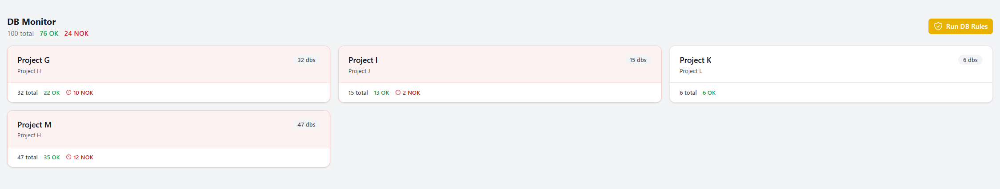

DB Monitor
The DB Monitor shows all databases discovered on your configured database servers. It gives you a quick inventory of what exists and forms the starting point for database cleanup tracking.

All discovered databases from your configured servers.
Prerequisites
Before you can use the DB Monitor, you need to configure at least one database server in Settings. DevOps InControl supports SQL Server and PostgreSQL.
How to Use It
- Open DB Monitor from the sidebar.
- The screen shows all databases found on your configured servers as a grid.
- The total database count is displayed at the top.
- Click Refresh to re-scan the servers.
DB Projects
To track which databases can be cleaned up, you create DB Projects. Each DB Project focuses on a subset of databases (filtered by name) and checks whether the linked Azure DevOps tickets are still active. See DB Project — Cleanup Tracking for details.
What You Can Change
| Setting | Where to Find It |
|---|---|
| Database server connections | Settings → Database Servers section (up to 3 servers). |
| DB Projects | Managed from the DB Monitor screen itself — click Add DB Project. |
Note
The DB Monitor only requires read-only access to the database server. It lists database names but does not access any data inside them.